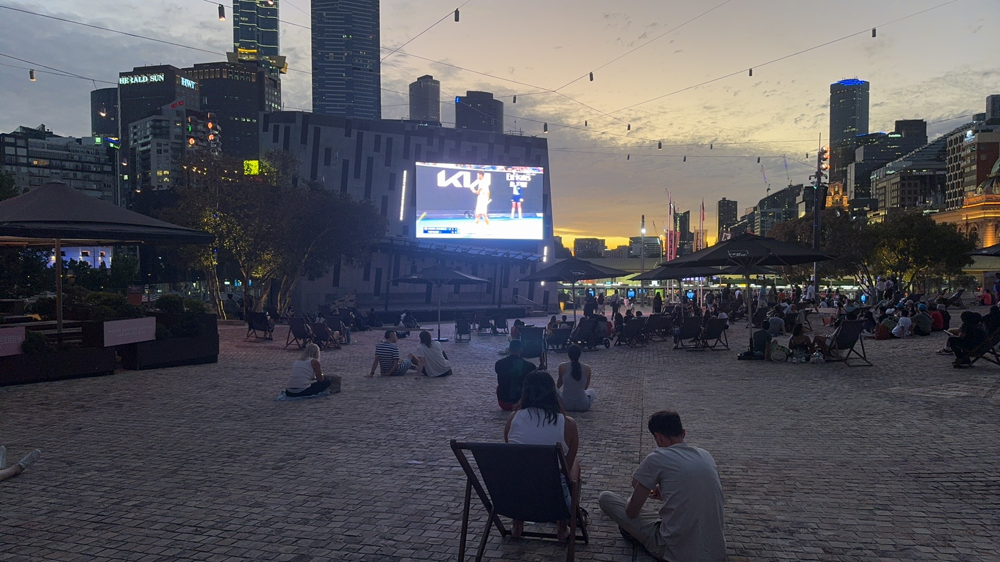
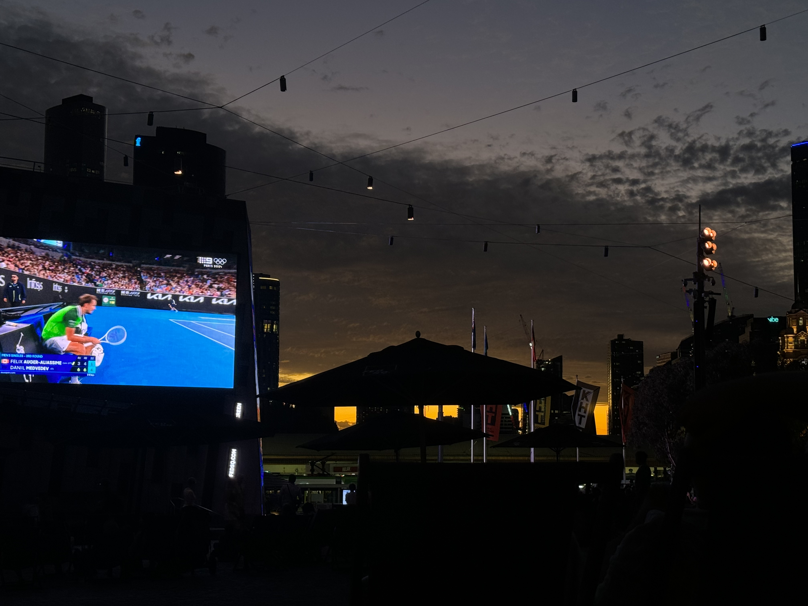
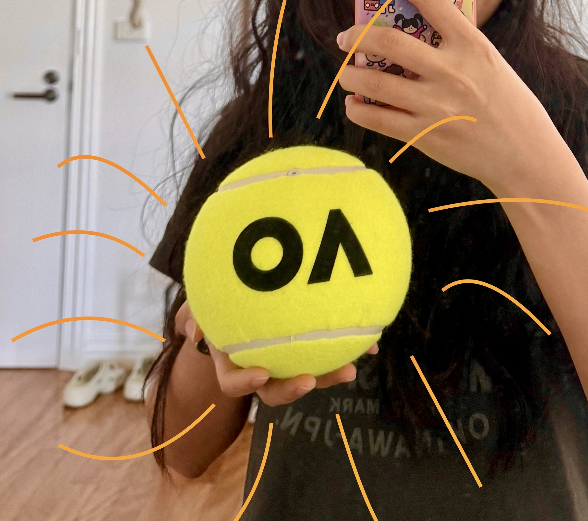
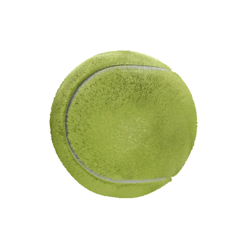
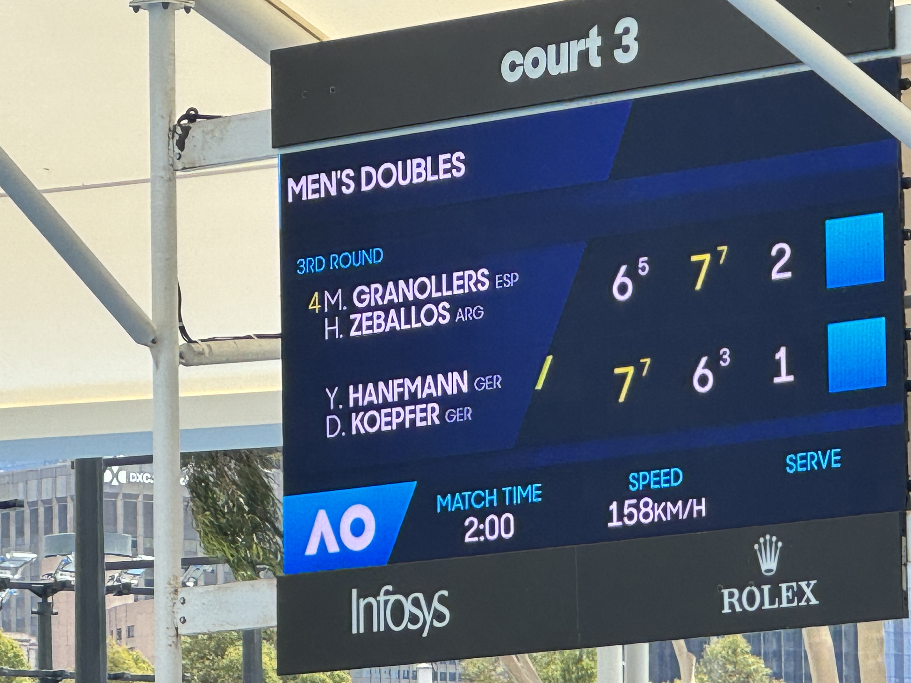
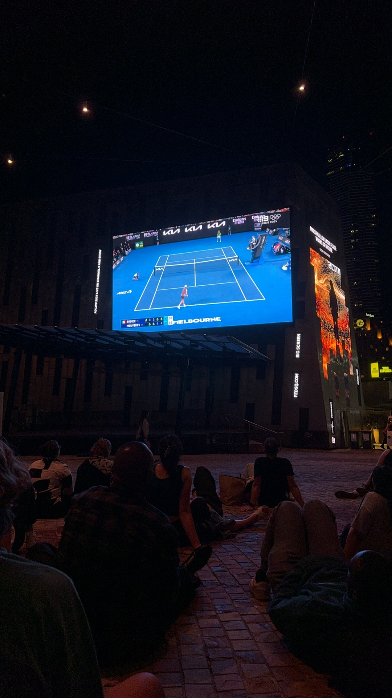
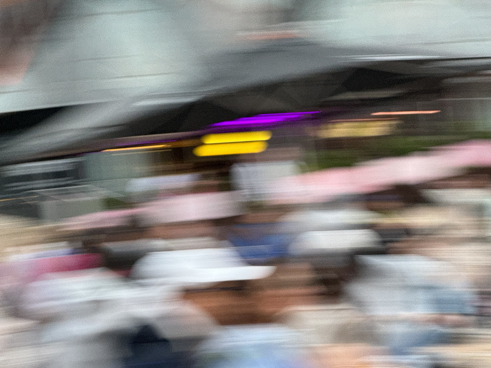
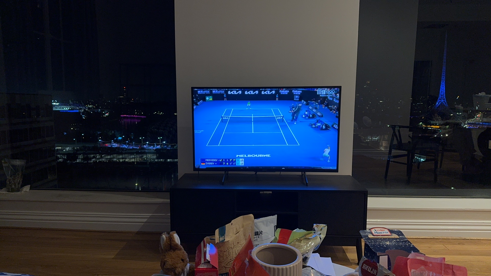

These memories took place during the 2024 Australian Open, where I met Bai while watching the tennis matches, and we both became crazy fans of the games!






I can't believe I didn't take a photo with Bai!